06Tech Beyond The Myth
Almost Useless Machines
09 November 2021
In the introduction of the seminar, we were introduced to the idea / approach of consumer electronics and technology as artifacts of culture for the epoch for human species. The stream introduced ideas that we would later see hands on by disassembling consumer electronics in the classroom.
Reflections and themes of the forensics of technology
- Convergence- How appliances look more similar in usability and uniformity relating to scalability.
- Supply Chain- Involves components, company equipment vs consumer equipments differ in convergence chips integrating very specific chips li> Blackbox- evolution of appliance making, everything is similar, where chips make up large networks of transistors, whose function is not open source or hackable.
- How self explanatory is the design asks questions of abstraction of design is far away from how humans interact with the world, as the level of abstraction needed becomes political and social, where most people do not know or care how the explanations and re-usability is low.
- Reverse engineering as a means to map supply chain networks and components.
Forensic Report
The second part of the stream consisted of us disassembling consumer electronics to understand their components and try to resolve how they have become obsolete or stopped working. The main point I took away from the exercise was that consumer electronics have been engineered to purposefully become obsolete for the business purposes of those supplying the products, Yet we have evolved very powerful processors.
By tearing apart broken down electronics, we got a glimpse inside the world of electronics into ideas such as systems, logistics and supply of components. The group I was part of dissected an induction stove. Uncovering the induction stove gave me an opportunity to use technology fundamentals such as datasheets, atasheets, multimeters, power supplies and electronic tools. The complete forensic report can be found in our groups HACK.MD web page. https://hackmd.io/@kailey-nieves/SJmKU6PwF

 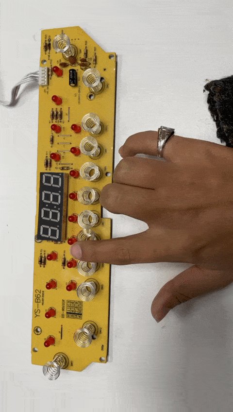
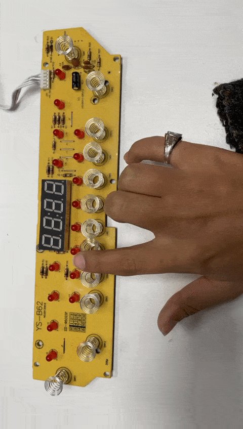
 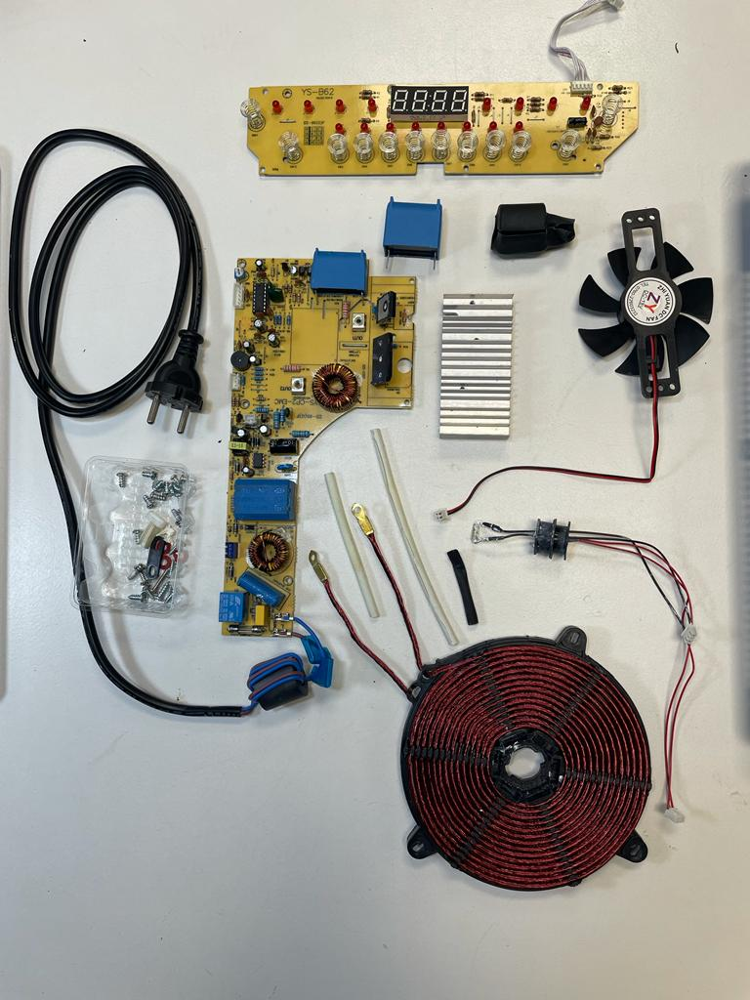
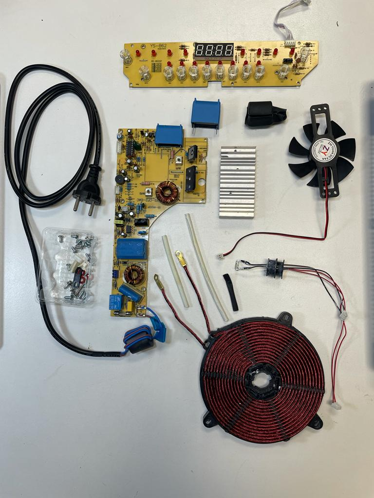

 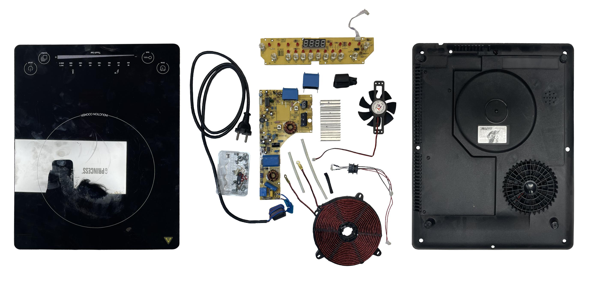
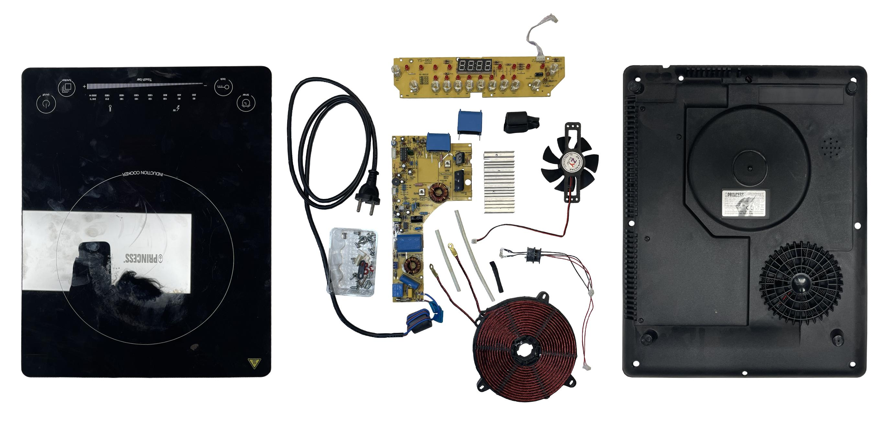
Almost Useless Machines _ Mehrror from Borbála Moravcsik on Vimeo.
Almost Useless Machine
09 November 2021
After a week of disassembling consumer tech, and learning about the fundamentals of their assembly. We kept their components to build new inventions. We were introduced to the Chindōgu concept, a Japanese concept that expresses an ingenious gadget that seems useful but in the end it causes more problems than it solves.
Meh..rror
Using the components from last week, we derived a concept of an offensive mirror that doesn't actually want to see you. The first first iterative design process included thinking about a mechanism that would turn around a disk once the viewer comes closer to it. The savanged components included a Roomba DC Motor, an IR sensor also from a Roomba and lastly a relay.
The first step was dividing the group into members who code and then those who do product design. In the coding, we integrated the wiring to power the motor with the relay and also figured out the logic of how to change the direction of the motor when the sensor is activated. On the product design side, we 3D printed a few components to screw the scavenged computer disk onto a rotational component. Furthermore, we used Arduino to code the amount and length of rotation for the motor and set limits to timing, calibrate the data received from the IR sensor setting on which distance / closeness sensed , the motor should change direction. The presentation of the project can be found here: https://drive.google.com/file/d/174ZWg0j11hbkwmNVjtXF-n_bIxY92wSI/view?usp=sharing
It includes:- Our Brainstorms
- Fabrication of the product
- Which components were scavenged
- How we hacked the components
- Circuit Diagrams
- Pictures and Illustrations


Measuring the World
11 November 2021
In the course Measuring the world, we learnt how powerful sense making can be through the the SmartCitizen Project. Some lessons learnt that stood out to me included:
Sense making at the Fab Lab ( smart cities to smart citizen)
How to use low cost products to capture data What is a smart city and what is the role of the citizen in the city Smart citizen kit: Using open source tech for citizens. Using technology to capture data The kit was meant to be the opposite of Push data into data silos , having an open ecosystem of hardware and software Sensing, awareness and action became the line of work the smart citizen followed Mapping expectations using a newspaper article in participatory design Plaza del Sol: mixed uses allow for variety of actions throughout the day.Scoping, community building, planning, sensing, awareness, action, reflect, legacy Reflection on open source ware and who owns data, or has the right to collect itHow human habits through garbage effect data access and extrapolation:
Aggregating data from millions of users everyday where users, through their everyday activity, in this sense, one can get a huge amount of insight through the data sets we give away to free applications. Strava released a heat map showing trails, through anonymised data , mining information of human actions can be done Data fusion: in studying gathered data from different sources, one can get many different types of insights in layering data sets. There is a path to find proxis to estimate if an estimate is true or false How are we protecting data privacy? The new GDPR law, were money and access give way to Salus.coop We use Data to train a system to build Artificial Intelligence The pandemic increased the speed of the digital domain such as the vaccine passport and zoom privacy agreements In many ways, tech and communication sites fit securely in an economy where data and services are commodities.
Data capturing MethodologyThink of your ultimate data you would like to collect in an ideal world From hypothesis to data- finding data in the real world with available tools Data capturing- set a bench mark, learning how to self assess and think about the data afterlife storage How to use the raw data and extracting it into information, data analysis and creating an average. I can use My SQL and other high performance proprietary data storage systems. After discussing Data capturing Methadology, we were offered the opportunity to use a data capturing tool and complete a project. Our group the Urban Gardeners used the smart citizen tool to capture data to investigate areas in Poblenou that have the optimal vegetable growing conditions. The project objective started with the question “Can I produce the ingredients of my meals at home or my neighborhood?” the process and results of the data collection can be found on our HACK.MD page here: https://hackmd.io/@iVmA-7a0Rdya6ObAbtxE-A/By1o40sPF
 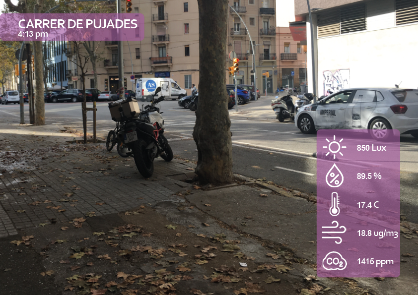
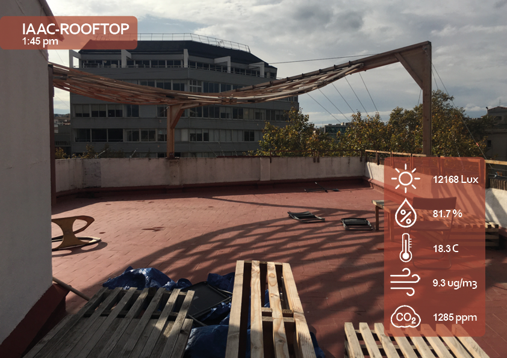
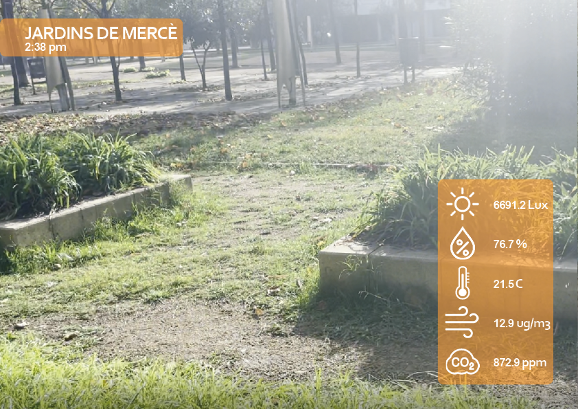
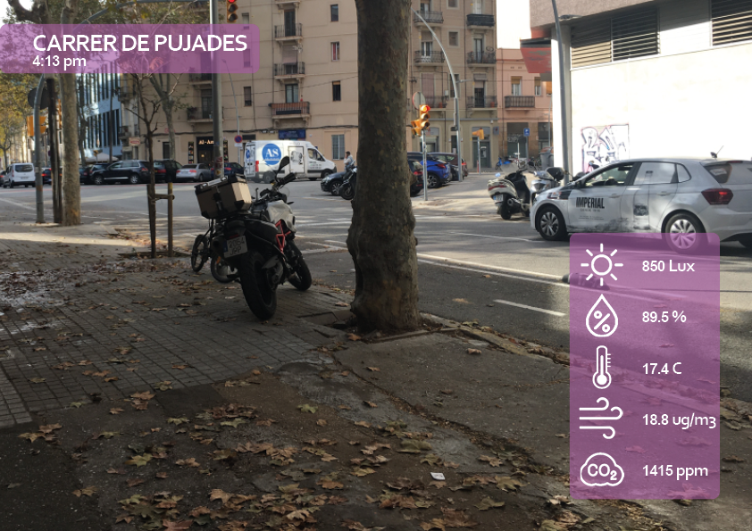
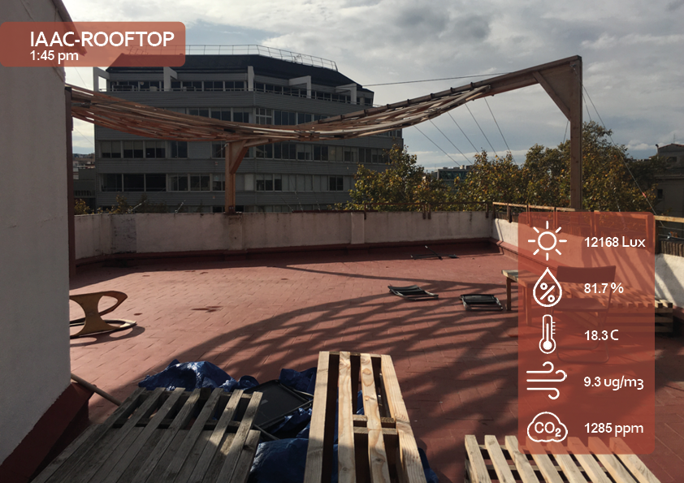
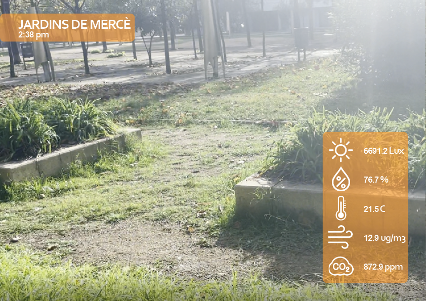
 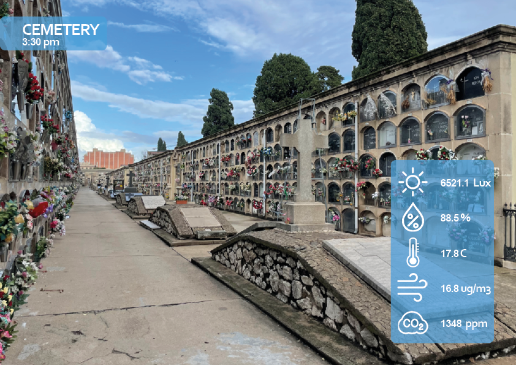
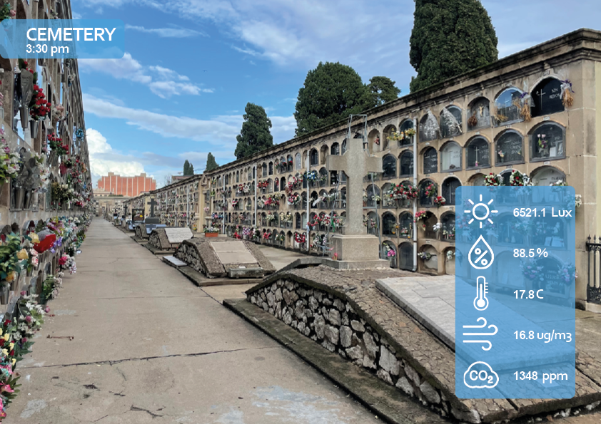